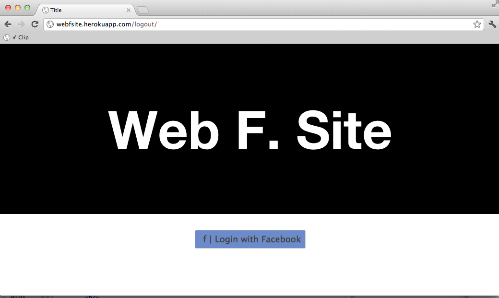
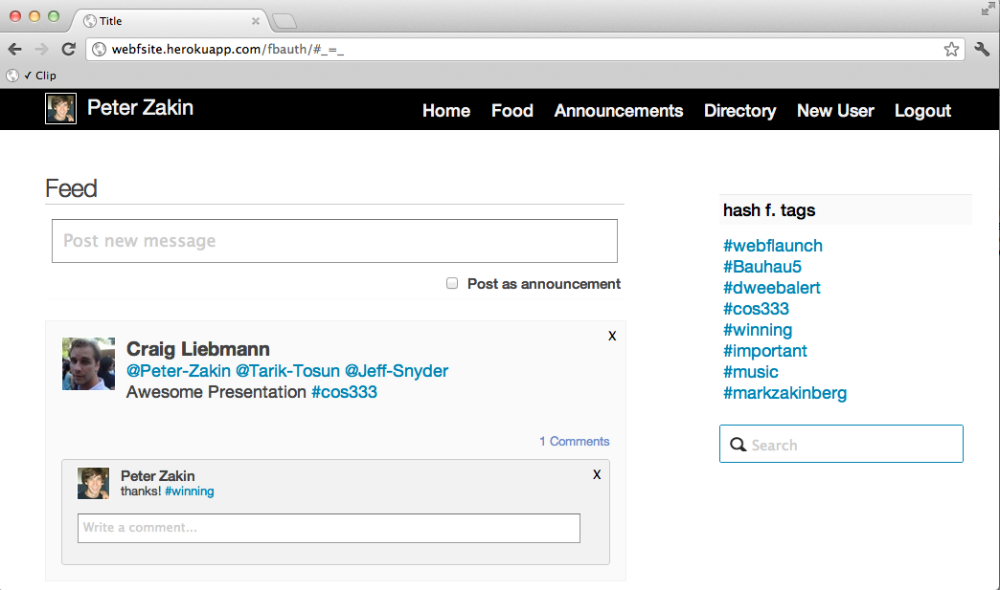
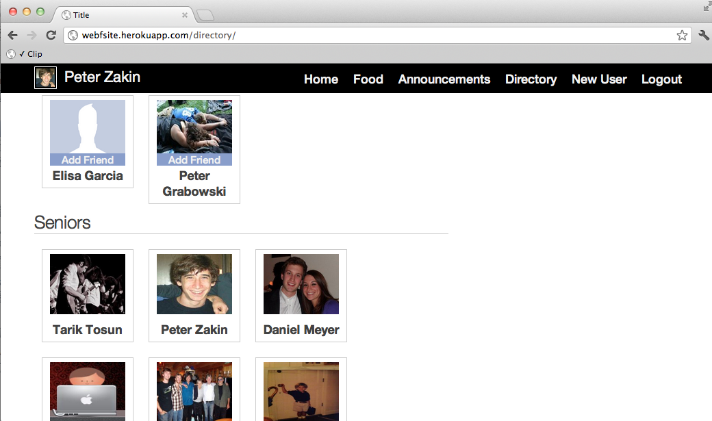
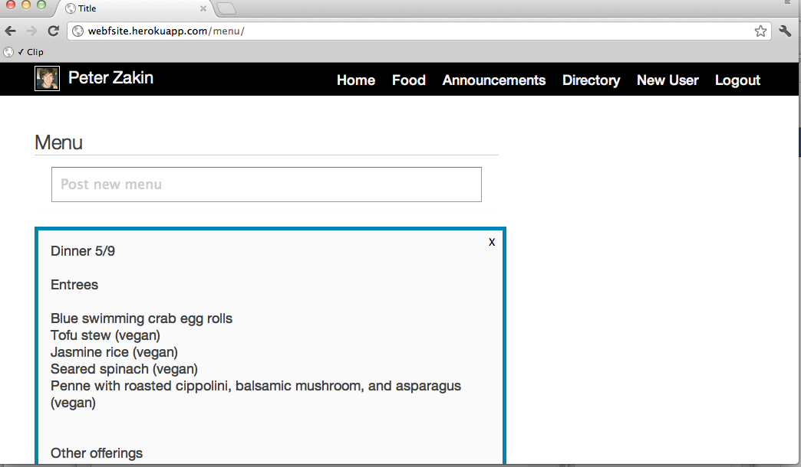
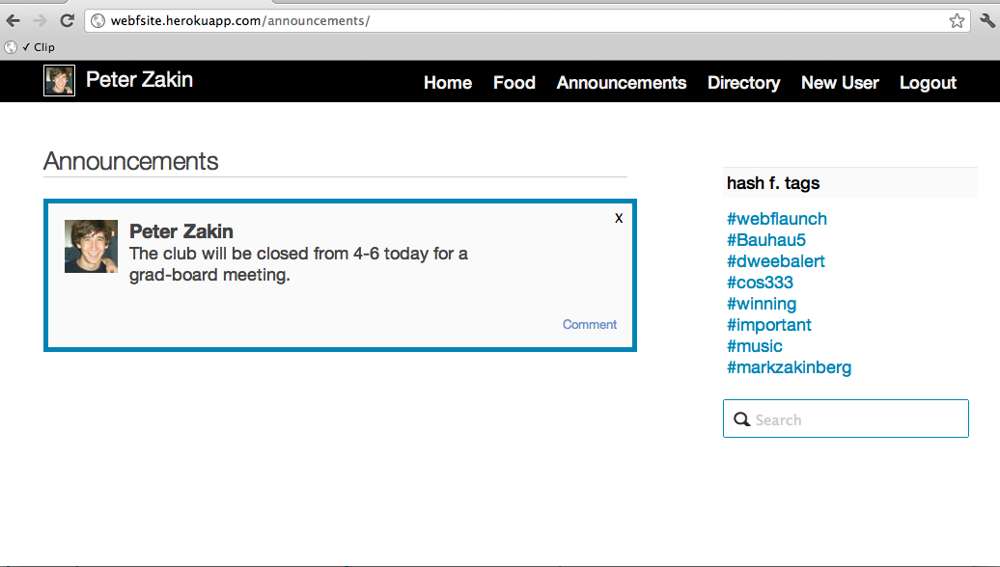
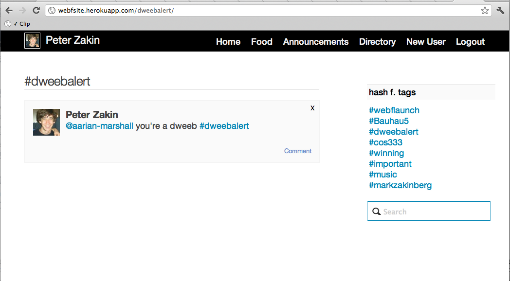
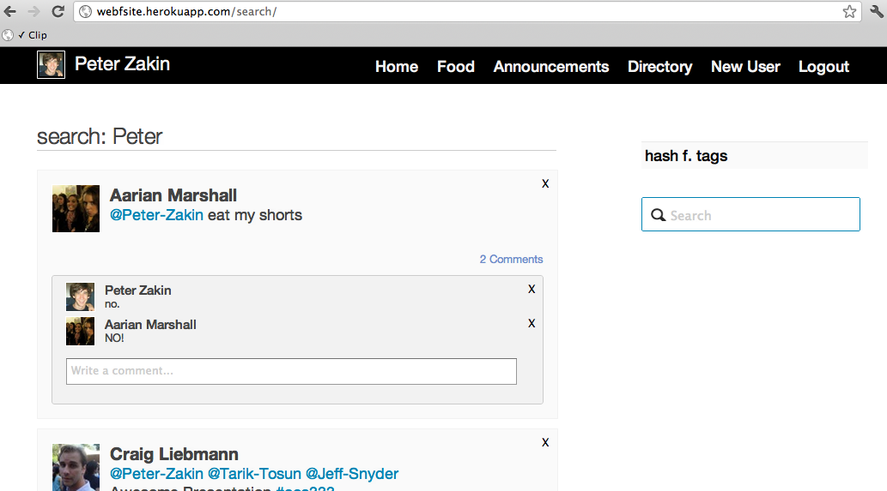

Web F. Site: Product
Web F. Site is a social network customized for the unique personality of Terrace F. Club. It's a place for club members to connect to other members, share great content, and access important information relevant to the club. In short, it's a digital extension to our home on Washington Road.

The feed is the main destination at Web F. Site, detailing all recent posts on the site. Users can add hashtags or user mentions for a clear and structured discourse.

The user directory lists all members in the club, organized by class year. We've also made it super easy for members to become friends on Facebook, adding Friending buttons to the images of users you're not currently Facebook friends with.

The Menu provides an easy interface for Terrace's food chair to post information about upcoming meals and easy viewing for Terrace members.

The Announcements section is a place for Terrace members to view important information sent out from the officers about concerts, club policies etc... Officers can post an announcement just by checking off a radio box on the posting prompt from the feed.

Web F. Site supports use of hashtags (#topic) and user mentions (@FirstName-LastName) to help members communicate more clearly.

We also offer a convenient search feature that lets users find posts that they're looking for.
